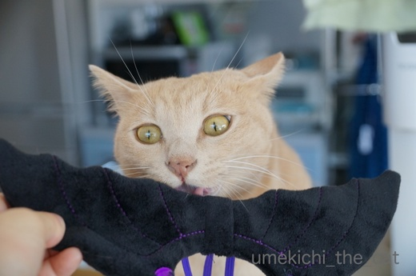
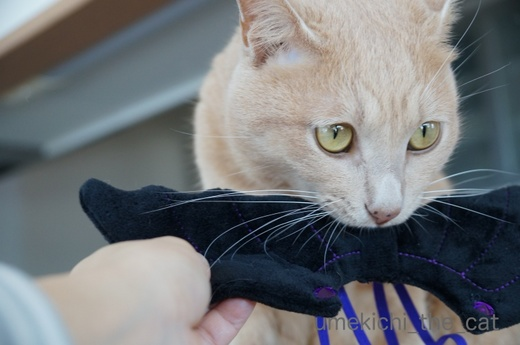
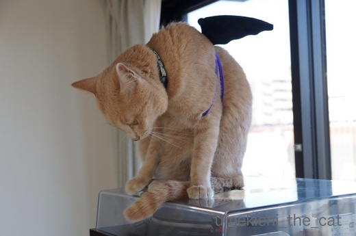
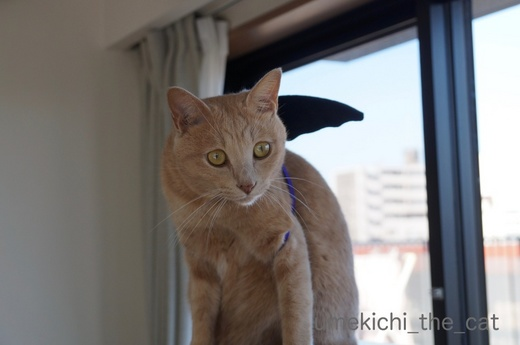
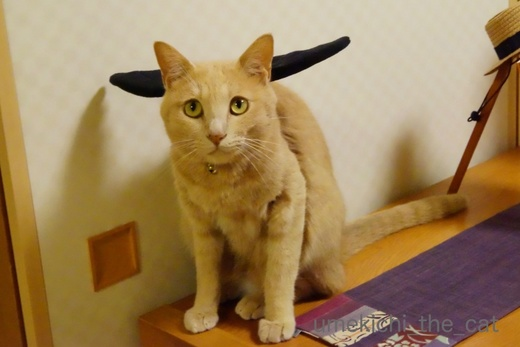
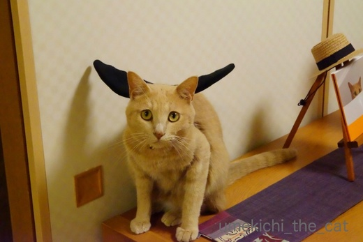
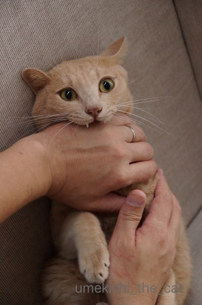
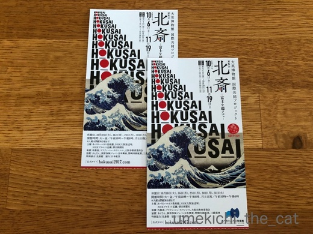

コウモリにはなれなかったけれど [梅吉]
世の中のハロウィンイベントは今週末がピークになるのでしょうか。
週末なので街にはコスプレの若者がいて・・・
なんて思っていましたが昨夜は一人も見かけず。
騒ぎに巻き込まれなくて良かったけど^^;
我が家ではスリコで買った羽でコウモリに変身してもらおうと梅吉さんにお願いをしてみましたよ。



あまり嫌がらずにつけてくれるのですがじっとしてはくれません。
羽が良い場所にキマらない。

良い感じの場所に定まりましたが片羽根しか見えていないし。
「翼の折れちゃった堕天使」って感じでしょうか(*>艸<)
嫌がり始めたので速攻外します。
日を改めて再チャレンジしてみました。

あ、今度はなかなか良い位置に羽が見えているではありませんか！

ちょっと角度をつけると「ぶい〜〜〜ん」と飛んでる感じ？
でも、ふすまがバックな為ハロウィンっぽさコウモリ感は皆無です(^▽^;)
コスプレさせるだけじゃダメ、全体の雰囲気が肝心だと思った一枚でしたー。
コウモリにはなりきれませんでしたが巷では＃吸血猫 なる種族がいるとか！
（＃吸血猫 インスタ でググると画像がたくさん！
たんに吸血猫だとアニメのキャラクターがヒットしちゃいます。）

それならば完璧です。きっとだれよりも吸血猫。
血は吸われちゃうかもしれませんがお返しに幸せを注入してくれますよ♡
おっとの手の赤い線がすごいです・・・・・(⌒_⌒;
北斎－富士を超えて－展に行ってきました。

すでに行かれた方のブログを見て土日は避けよう、平日昼間も怪しげだな、と思い
金曜の夕方に行ったのですが・・・
5時ごろ着いた時にはチケット売り場も入場口も人でいっぱい( ；∀；)
チケットはコンビニで買って、とも思いましたが半券が欲しかったので10分ぐらい並んで買いました。
聞けば前日に関西ローカルのワイドショーで特集があったとの事。
テレビの影響力ってやっぱりすごいんだなー。
作品は一番有名な『神奈川沖浪裏』と同じ波がモチーフの
「男浪図」「女浪図」が良かったです。
所有している小布施町では昭和初期まで祭屋台の天井絵として実際に使用されていたとか。
今にも動き出しそうな波のうねりはそんな舞台にこそ映えるんじゃないかなと思いました。
浮世絵版画はもちろんでしたが肉筆画も見応え十分でした。
北斎さんご長寿かつ壮健な方だった様で80代の作品もたくさん。
江戸の名所一覧を書いた細か〜い地図があったのですが
老眼気味の私の目には細部がよく見えませんでした。
80代に負けた・・・・北斎さん超人！
写楽は映画や本でよく目にしますが北斎さんのことって実はよく知りません。
オススメの映画や本などありましたら教えていただけると嬉しゅうございます。
2017-10-28 13:51
nice!(65)
コメント(30)

カフェオレ色の梅吉

梅吉 2023年8月10日 永眠


梅吉と出会った譲渡会

犬猫の理由なき殺処分ゼロ
妄想広告
UMEKICHI 光

爆発的に早い！
時々攻撃的！
Thanks to Mr.Boss365
爆発的に早い！
時々攻撃的！
Thanks to Mr.Boss365

吸血猫（笑
幸せを注入してくれるなんて♪
ちょいと手が痛い痛しいですが(;^_^A
それでも我が家にも来てほしいですねぇ～！！
by きぃ (2017-10-28 14:24)
おっ！梅吉くん、パタパタ飛び立ちそうだね。
でもね。すっごく中途半端な高さまでしか飛べないの。
しかも超ゆっくり(≧▽≦)ごめんね。可愛らしい梅吉くんのイメージです。
片羽根写真はカッコいいな～！
吸血猫。旦那様の手・・・幸せ注入しすぎです。
by emi (2017-10-28 14:42)
何とキュートなコウモリさんやな～♡ こんな子が来たら、お菓子いっぱいあげたい！
北斎は、最も気になる歴史上のオトコ、地球人ではないと思っています。＆お嬢さんの作品もすごく素敵ですよねー。
by Ginger (2017-10-28 16:57)
梅吉さんちゃんと着けさせてくれたではないですか! お利口ですね~。5枚目と6枚目のお写真を交互に見ると、パタパタしてるように見えますよ~。何たってホントに飛べる梅吉さんですからね。でも吸血猫はお目目が可愛すぎま~す。
by zombiekong (2017-10-28 17:22)
コウモリの羽、良い具合に生えてますよ〜
さて、飛び立つぞって感じですかね。
吸血猫、梅吉さんは主役ですね〜
映画ならエンドクレジットに『梅吉父さんの手』と入れなくてはいけませんぞ（笑）
赤い線は努力の跡ですね。
北斎展、行かれましたか？
混雑仲間になりましたね。
by kiki (2017-10-28 17:23)
飛ぼうとしている感じが少しします。
「飛んでもええんかい？」みたいな(^-^;
「飛べないんだったら、つけるな」で、噛んでいるんですね(^-^;
by riverwalk (2017-10-28 17:51)
天気が悪いので
街のハロウィン行進、すこしおとなしくなりそうですね。
吸血猫はばっちりです。
カワイイです！
by ふにゃいの (2017-10-28 18:16)
吸血コウモリですね～コウモリのはねをつけているみたい。ハロウィン楽しんでますね～
by みぃにゃん (2017-10-28 19:34)
お返しに幸せ注入！なるほど！！
だとしたら私の腕は幸せでパンパン、もうはち切れそうです(^▽^;)
梅吉さん、黒羽がお似合い♪
きがついたらホバリングしてそうです(*^▽^*)
北斎、80過ぎてあんな繊細な絵が描けるなんて、きっと宇宙人だったんだと思います！
by ゆきち (2017-10-28 20:24)
梅吉さん羽を付けても飛べなかったのですね！
吸血猫でも甘噛みっぽいですね(^^)
by ma2ma2 (2017-10-28 21:50)
この夜、窓を開けたら梅吉さんコウモリが飛んでいるかなあ。^^)
手に残る吸血痕（なのか？^^;）、痛みがズキンズキン伝わってきます。
北斎、年老いても繊細な絵を描くその集中力に驚きです。
by yes_hama (2017-10-28 21:51)
下手したらホントに手が血まみれになって
本物のホラー写真になりそうな＾＾；
by ぽちの輔 (2017-10-29 06:32)
吸血梅吉さん、ナイスショットです！
ハロウイン、楽しんでますね～(^_^)
by kou (2017-10-29 06:41)
梅吉くんが嫌がらずに
コスプレモデルに協力してくれてなにより♪。
カメラ目線もバッチリですね。
私もときどき、うちのコたちに
被り物やコスプレのモデルをお願いしてみますが、
みんなイヤイヤなので
梅吉くんのような「いいおかお」はしてもらえませーん！
by ハリネズミ (2017-10-29 07:55)
吸血されても良いからこんな風に相手して欲しいなぁ(*_*)
ガジガジしてもらえたら、それだけで幸せです♪( ´▽｀)
ハロウィン、昨日の土曜日に出かけましたが、道路歩いてるとお父さんが
着ぐるみ着た家族がいて「うわぁ、家族連れなのにあんな格好で歩くって
なんかの罰ゲームか・・・イタすぎる∑(ﾟДﾟ)」って思いましたが、
かみさんに「こんな天気でもハロウィンパーティーやるんだねぇ」って
言われて「あっ、仮装ね(⌒-⌒; )」って気づきましたw
by ニッキー (2017-10-29 19:36)
北斎というと昔、お茶漬けに浮世絵カードが
入ってたような気が＾＾
少し前に、歌川国芳展に行った時、猫の浮世絵を見て
大好きになりました。
私もよく知らないのですが、同じカテゴリーのような
気がして、面白そうですね♪
梅吉こうもり登場！ですね( ´∀｀ )
ちゃんと飛んでるように見えますよ～＾＾
by マーヤ (2017-10-30 00:33)
かわいい・・・イヤ、カッコイイコウモリさんですね。
一番下の写真に羽があったら完璧ですね！^^
ちなみに・・・
梅吉くんが乗っているのってレコードプレーヤーですか？？
今やレコードがただの飾り物になっているので
何気に欲しかったりしています。・・・といっても
家ではCDすら聞かないので、たぶん使わないだろうけど・・・(｡-_-｡)
カンカン帽の飾り方もステキ〜
by Ja-Kou66 (2017-10-30 01:30)
だんなさまのおててをガブリの梅吉君は
ばっちり吸血猫！^^
あー、やられてみたいｗｗ
がぶりされてみたいｗｗ
その牙をつまんでみたいー(笑)
わたしは、牙をこんこんって爪でノックするのが好きです^m^
「ぶい〜〜〜ん」と、飛びそうな梅吉君のカメラ目線
めちゃめちゃ可愛い^^
by リュカ (2017-10-30 10:48)
梅吉さん、待ってましたっ！
コウモリさんコスプレ、可愛すぎるやろーーーっ♪
もう、上目使いがタマリマセン。
「こんな感じでイイデスカ？」感に、萌え♡
黒い羽根が、大きな猫耳にも見えたり、萌え×2♡♡
うーーん、ゴチソウサマでした(^-^)
北斎さんですが、ちょっと別目線で見たい場合は、
朝井まかてさん「眩（くらら）」という本をおススメしちゃいます。
娘・お栄の目線で見た、おやじどの＝北斎さんとともに絵に生きた物語です。
渓斎英泉も登場して、当時の浮世絵・絵師の粋様も感じられますよ。
よろしければ、ぜひ（ご存知でしたら、スミマセン～）。
by morichan (2017-10-30 11:18)
梅吉コウモリ可愛すぎますね。優しそうなコウモリさんです(*^_^*)
旦那さんの手見事に赤いですね。それでも噛ませてあげるところに梅吉君への愛を感じるわ(^^)
by palpal (2017-10-30 19:13)
コウモリの羽根、ちゃんとつけてくれたんですね～えらい！
梅吉さん、さすがの着こなし♪
ちょっと困ったようなお顔が～
浮世に出てきちゃったコウモリさん感?醸し出してます＾＾
じつは世慣れた吸血コウモリ？
北斎さん、いいですよね～。
私も、朝井まかての「眩（くらら）」読みました！ おすすめします＾＾
NHKで最近ドラマにもなりましたが、よかったですよ～。
by sana (2017-10-30 20:09)
北斎の本の件。わたしもあまり知らないなー。
でも昔、高橋克彦の「北斎殺人事件」を読んで、当時は面白かった記憶が。
今読むとどうなのかな？
読み返してみようかしら(笑)
あとは、北斎ではないんだけど、北斎の娘を主人公にしたアニメをWOWOWでやっていて、それは面白かった。
百日紅ってタイトルでした。杉浦日向子って人の漫画みたいです。
長野の小布施は、北斎が晩年逗留した場所で、ここは普段展覧会で観ないような北斎の作品がてんこもりで面白かったよ^^
by リュカ (2017-10-30 23:05)
写真をくれなきゃイタズラするぞ! 梅吉コウモリさんもらった~!
by zombiekong (2017-10-31 00:22)
きぃさん＞赤い線の数だけ幸せになれますから！
ハロウィンの行列で見かけたら手を差し出してみてください(*>艸<)
emiさん＞中途半端でゆっくり・・・私もそう思っていた！
なので「びゅんびゅん」じゃなくて「ぶい〜〜〜ん」w
でもね、突然アホみたいに走り出すから注意してねー(*>艸<)
おっとの手は日々幸せを注入されておりますwww
Gingerさん＞お菓子をいっぱいもらってもイタズラはしっかりしますよー。
その節はよろしくお願いいたします(^_－)☆
北斎さん、図書館で本を借りるべく色々調べたのですが・・・
本当！宇宙人みたいな人だった様ですね(・o・)
応為さんの絵もちらりと見ましたがあだっぽく花があって素敵！！
本が届くの（貸し出し申請中）楽しみです＾＾
zombiekongさん＞そうそう！翼がなくても飛べる梅吉ですから(*>艸<)
今ひとつ乗り気じゃなかったのはそういう理由だったのかも〜。
写真を取りに来た時に梅吉にガブガブされなかった？
それとも きれいに あっぷしてや〜 ってお願いされたかしら・・・
kikiさん＞エンドクレジットに『梅吉父さんの手』、
まさしくその通りです！
ついでにプロデューサーと演技指導も(*>艸<)
ちなみに監督は私です(๑˃̵ᴗ˂̵)و
北斎展はすごい人でした・・・絵の前から動かない人もいて
平置きにしている展示品は見られないものもありましたよ^^;
混雑しそうな展覧会はリュカさんみたいに初日に行ってみようかなー。
riverwalkさん＞失念しておりましたが梅吉、翼がなくても飛べるんです・・(*>艸<)
もしかしたらプライドが傷ついちゃたのかもー！！
ふにゃいのさん＞土日は台風の影響で家におこもりになったので
ハロウィンらしい出で立ちは梅吉コウモリを見たきりでした。
いや、これが最強なのでほかは必要ないんですけどねー(^_－)☆
思いがけず吸血猫にも会えたし！！
みぃにゃんさん＞楽しいのは動物とちびっこのコスプレまでですね・・・
大人のはちょっと(⌒_⌒;
ゆきちさん＞吸血猫のいるご家庭は腕も足もスネも
うちの場合はアゴも！幸せではち切れそうになってますよね(^_－)☆
赤い線は幸せと愛のしるし、目に見えるのがうれしい・・・のか？(*>艸<)
朝も夜もかすみ目で見難いな・・・と思っていたらこの頃は昼間まで！
画才だけじゃなくそれを生かせる超人的な身体まで持っていたとは
北斎さんはやっぱり宇宙人に間違いなしですw
ma2ma2さん＞本にゃんは甘噛みのつもりでも細い牙はよく手に食い込んできますよ・・・(^▽^;)
結構イタイ・・・
yes_hamaさん＞アズ氏をお誘いしに窓の外を「ぶい〜〜〜ん」と
飛んでいるかもしれません。
お菓子をあげてもあげなくてもイタズラしますのでよろしくお願い致しますm(_ _)m
北斎さん、精力的に作品を生み出す精神力と集中力は超人的ですよね。
ぽちの輔さん＞あ、流血している時あります(*>艸<)
でもスプラッタまで行かないのでご安心くださいw
kouさん＞梅吉はあんまり楽しくなかったかもしれませんが
おとーさん、おかーさんは大喜びのコスプレでした＾＾
ハリネズミさん＞ああ、チャトラーズのみなにゃんはコスプレNGなんですねー。
暴れん坊の梅吉なので嫌がるか・・・と思ったのですが
かぶり物を皮切りにポーズを決める、まではいきませんが
思ったよりも協力してくれます＾＾
でもね、協力してくれるのは20秒くらいの間なので
その間にいかに写真をたくさん撮るかが勝負です。
早撃ちならぬ、早撮りが得意になりました(^▽^;)
ニッキーさん＞もしもニッキーさんの手に赤い線が沢山付く事があったなら
それは勲章！になるのですね＾＾流血もまた楽し♪かもー(≧▽≦)
コスプレするならイタい人に間違われない様に「ハロウィンだよ！！」と
思い切り弾けないとダメみたいですね〜。
肝に命じておきます（いえ、コスプレしませんから・・・(*>艸<)）
マーヤさん＞今年６月に「いつだって猫展」という
猫の浮世絵や招き猫をテーマにした展示会があったのですが
そこで国吉と広重の猫浮世絵をお腹いっぱい見てきました＾＾
かわいいかわいいじゃない化け猫ちっくなニャンコ達が
私も大好きになりました！
北斎展にもニャンコの絵が一点ありましたよ。
（女三の宮と猫の肉筆画）
でも北斎さんはやっぱり風景画かな(^_－)☆
Ja-Kou66さん＞一番下の写真にはホント画像加工したくなりました。
羽をプラス・・・ああ、ツノもいいわね・・・なんて(*>艸<)
レコードプレーヤーはおっとが学生時代に買ったものです。
盆栽化している時期もあった様ですがネットでなんでも手に入る様になって
針やらなにやらを新調して今も現役です。
一年に２〜３度聞くかな？
レコードに針を置いたりA面が終わって裏返したり・・・
優雅で贅沢な時間かもしれませんが今になると結構面倒です(⌒_⌒;
で、同じアルバムをネットでダウンロードしてデジタルで聞くという・・・(*>艸<)
レコードをお持ちならプレーヤーがあってもいいですよね！
ぐるぐる回るターンテーブルをニャンコの皆さんに楽しんで頂きましょう！
（あ、そうじゃなくて？）
morichanさん＞わー！梅吉コウモリ、喜んでいただけましたか！！
ちゃんとコスプレに付き合ってくれました。
意外と気遣いのできる梅吉にはチューのお礼をしておきましたよ(*>艸<)
北斎さんの書籍情報ありがとうございます！
朝井まかてさんは読んで見たいなと思っていた作家なのでちょうど良い機会。
早速図書館に予約を入れました（本は買わない派。置く場所ないから・・・）
ドラマ化されて注目を集めているのか待ち順番は19番目。
村上春樹の「騎士団長〜」の850番目に比べたらずっとマシ！
年内には手元に来ると思うのでとっても楽しみです♪
palpalさん＞一件優しそうに見えますが見事な牙を隠し持っております(｀_´)ゞ
おっとの手、文字通り、見た目にもわかる程「痛いくらいの愛と幸せ」を
注入されております(*>艸<)
痛い痛い！と言いながら楽しんでいるし・・・夫婦揃って猫変態！！
sanaさん＞「まいったなぁ」という顔をしながら付き合ってくれました。
ブログ猫としての自覚がてできた！？(*>艸<)
梅吉コウモリはどんなにガブガブしてもおイタをしても最後は
「かわいいねぇ」で許される世慣れた、世渡り上手なコウモリさんです(^_－)☆
sanaさんもまかてさんをオススメなのですね！
NHKで応為さんの事を話題にしているな、と思っていたらドラマの事だったのですね。
見逃しちゃいましたー。残念！！
早速図書館に本の予約を入れました。届くのが楽しみです。
リュカさん＞牙をこんこんって私もやります！
あの感触がたまらないよねー。
こんこんから更に指でさすって水分を飛ばすと
お口がうまく閉まらなくなったりしませんか？牙出しっ放し！！
で、ますます喜ぶ猫変態です。
梅吉のガブガブ結構痛いよ。体験するのが一番だわね(^_－)☆
北斎さんの本の情報ありがとうございます！
朝井まかてさんの「眩」をオススメされたのでamazonで見たら
関連書籍に「北斎殺人事件」もありました。
杉浦さんの「百日紅」は図書館にあったので「眩」と一緒に予約しました。
「殺人事件」はその次にしようかな。
小布施、行ってみたいなー。北斎館と小布施栗を堪能したいわー。
by ちぃ (2017-10-31 15:37)
梅吉君のハロウィンコスプレ、ナイスバットキャット(横文字にすればいいってもんではない)ですฅˆ•ﻌ•ˆฅ♬
一生懸命なカメラ目線も、一瞬猫を忘れさせます。
背景が日常タップリなのも、ぽけゴーみたいに、あなたのおウチにハロウィンが！って感じで素敵だと思うわ！
梅吉君はトリックオアトリートで、美味しいオヤツもらいつつ、とんでもないおイタまでして行ってくれそう！
by BillK-ko (2017-10-31 20:45)
BillK-koさん＞梅吉、優良蝙蝠猫！（中国かい！）(*>艸<)
猫でありながら割と気を使う梅吉、写真を見直してちょっと切なくなったわ！
梅吉、エライな・・・・
ハロウィンじゃなくてもやりたい放題の梅吉なのに！
トリックオアトリートなんかに参加したらあたりは焼け野原ですよ(≧▽≦)
お見かけの際はよろしくお願いいたします・・・・・
by ちぃ (2017-10-31 21:06)
ガブッとしに来て気づきましたが、2回もコメント書いててnice! 押してなかった⋯。よくやるんです私。3回目のコメントもごめんなさいね。
by zombiekong (2017-10-31 21:20)
zombiekongさん＞私もnice!押し忘れ、良くやっちゃいます！
はやる気持ちを抑えきれずコメントを先に書いてー、
なんて手順にするともうダメ(⌒_⌒;
でもね、zombiekongさんと私だけじゃないですよ・・・(*>艸<)
皆さんそんなお年頃ってことかしら！！Ｏ(≧▽≦)Ｏ
by ちぃ (2017-11-01 09:08)
牙は自前だもんねー
気がつけば記事数がすっかり抜かれてる（笑）
by じゅらまろ (2017-11-01 16:55)
じゅらまろさん＞
はい！地味に頑張ってますwww
by ちぃ (2018-07-07 15:51)